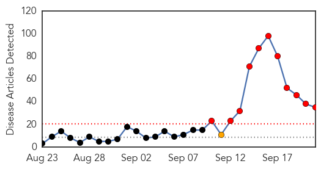
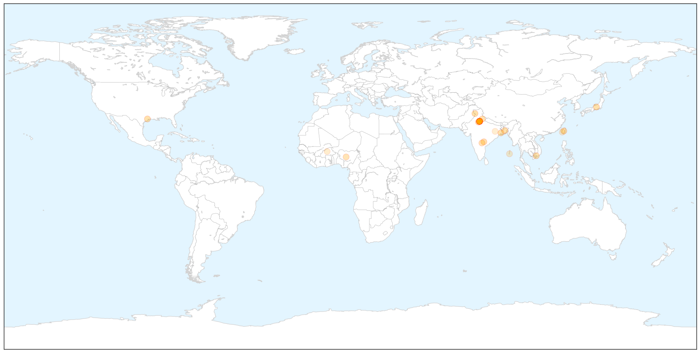
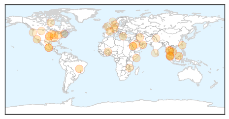

Dengue Fever
30-Day Web Trend
11 alerts, 1 warnings

30-Day Twitter Trend
3 alerts, 0 warnings

Article Locations

X

Article Confidences

Top Articles:
- 0.996
- Dengue threat
- 0.996
- 36-yr-old Succumbs To Dengue; Toll In Delhi At 22 Mobile Site
- 0.991
- Two cases of JE detected in Manipur's Imphal West
- 0.986
- Tainan Enterprises : mayor puts DPP duties on hold
- 0.985
- Not just Delhi, other states stung by dengue bite as well
- 0.981
- 12 deaths, 1,900 new cases in a week, dengue bite gets deadlier
- 0.979
- Why dengue threat could be up to 1,000 times bigger than you think
- 0.975
- Update: Dengue menace: Death toll rises to 14 - India
- 0.974
- 46 more cases in a day
- 0.966
- A new understanding of dengue virus
- 0.964
- After Punjab, Haryana, dengue scare in Chandigarh with 136 cases
- 0.957
- South Vietnam Has Most Dengue Fever Infections
- 0.947
- What the recurring dengue epidemic in Delhi reveals about us
- 0.936
- Are private hospitals in Gurgaon taking advantage of the dengue outbreak?
- 0.910
- Tehelka - Investigations, Latest News, Politics, Analysis, Blogs, Culture, Photos, Videos, Podcasts
- 0.909
- Set up separate 24x7 unit in each hospital: Centre
- 0.889
- Cabinet Secretary reviews preventive and clinical management measures to deal with Dengue
- 0.885
- What tests needed for diagnosing dengue?
- 0.870
- Taiwan university promotes dengue prevention to students
- 0.868
- 20 dengue cases reported in YMCA Faridabad so far, students accuse authorities of apathy
- 0.866
- To step up hospital care, Delhi govt opens fever clinics in 55 dispensaries
- 0.819
- Dengue that nobody wants to prevent
- 0.780
- The post-dengue prognosis
- 0.761
- J P Nadda reviews dengue treatment facilities in Delhi
- 0.737
- Delhi High Court seeks details of funds released for dengue control in Delhi
- 0.660
- Dengue: Centre Reviews Situation in Delhi, Other States
- 0.660
- Delhi Health Minister inspects two hospitals
- 0.625
- Dengue: Centre reviews situation in Delhi, other states
- 0.623
- India: Kerala State sees resurgence of diphtheria
- 0.591
- NCKU Raises Awareness on Dengue Prevention among International Students
- 0.558
- NCKU Raises Awareness on Dengue Prevention among International Students
- 0.549
- One doctor borrowed for 55 wards
- 0.529
- Dengue: Centre reviews situation in Delhi, other states
- 0.503
- Delhi HC seeks details of funds released for dengue control in Delhi
- 0.501
- Delhi High Court asks AAP government for details of funds released for dengue control
Top Tweets:
-
No tweets found for Sep 21, 2015
Unknown
30-Day Web Trend
0 alerts, 0 warnings

30-Day Twitter Trend
1 alerts, 0 warnings

Article Locations

Article Confidences

Top Articles:
- 0.987
- MERS cases on decline in Saudi Arabia ahead of hajj
- 0.984
- Health Authorities Remain on Alert for MERS
- 0.982
- 22 fall prey to water-borne disease ‘diarrhea’
- 0.976
- Malaysia General Business Sports and Lifestyle News
- 0.944
- Countries of the Americas agree to step up action toward rabies elimination
- 0.944
- Cyclospora outbreak leaves 546 people sick in US, says Centers for Disease Control and Prevention
- 0.936
- Look into humane ways to handle rabies outbreak
- 0.902
- People in Oman urged to approach slaughter houses
- 0.885
- Killing of dogs won’t help - Letters
- 0.878
- Govt orders 50,000 doses of rabies vaccine to contain outbreak in northern states
- 0.862
- Sexually Transmitted Infections: Those common and those not so common, Part 1
- 0.855
- Causes and Prognosis
- 0.847
- High Rate of Gastrointestinal Illness at North Canton Elementary School
- 0.847
- Arizona woman is third victim of widespread salmonella outbreak
- 0.822
- Hometownstations.com-WLIO- Lima, OH News Weather Sports
- 0.811
- Cattle disease spread by vets, not cows, suggests new study
- 0.780
- Cattle disease spread by vets, not cows, suggests new study
- 0.767
- IDNR: Deadly disease found in local deer population
- 0.751
- Reports of Illness and Death Prompt Soft Cheese Recall
- 0.748
- Deadly car bomb targets Somalia’s presidential palace
- 0.741
- French firms eye new markets in post-sanctions Iran
- 0.731
- France rejects Google’s appeal to drop ‘right to be forgotten’ case
- 0.729
- Republican candidate Carson says Muslims unfit to be US president
- 0.729
- Burkina Faso soldiers enter capital as peace talks begin
- 0.729
- Stronger, wiser, milder? What to expect from Tsipras II
- 0.722
- One year after Houthi takeover, Saudi-led strikes kill at least 30 in Yemen
- 0.702
- Cat tests positive for rabies in Ohio County
- 0.701
- Dist Health Society Mon conducts Health-Mela 2015
- 0.689
- Karoun Dairies recalls products as part of Listeria investigation
- 0.667
- Dr Matshidiso Moeti
- 0.663
- Dept confirms Kota Setar woman treated for rabies – BorneoPost Online
- 0.651
- New antibody offers hope in fight against C. difficile infection
- 0.650
- Bat found in Benton County tests positive for rabies
- 0.619
- Plan to test pigs for salmonella meets resistance
- 0.617
- U.S. may use heat to kill poultry if bird flu strikes again
- 0.615
- CDC funds study of ‘Kissing bug’ disease
- 0.595
- Diphtheria Returns To Kerala; Govt Steps Up Drive
- 0.590
- Can going to the dentist give you Alzheimer’s?
- 0.584
- Did HPV cervical cancer vaccine cause life-changing illnesses in Kent teenagers?
- 0.554
- Special Medical Camp kicks off at Leh
- 0.547
- Cases of pulmonary hypertension grow in children
- 0.546
- Community Health Centers In Rural India Are in Dire Need of Specialists
- 0.545
- Les Fjords de l'Ouest de la Norvège et le Glacier Bay entament une nouvelle collaboration afin de renforcer la conservation du patrimoine mondial marin
- 0.531
- USDA approves heat stress method to stop bird flu outbreak
- 0.517
- Health Ministry asserts maximum care for bomb victims
- 0.513
- Thailand Live Monday 21 Sep 2015
- 0.508
- 15 Egyptians die in Saudi Arabia during Hajj season: Health Ministry
Top Tweets:
- 0.753
- Saudi MERS site boasts a useful redesign. Gives breakdown of cases by suspected source - healthcare health workers household contacts 1/2